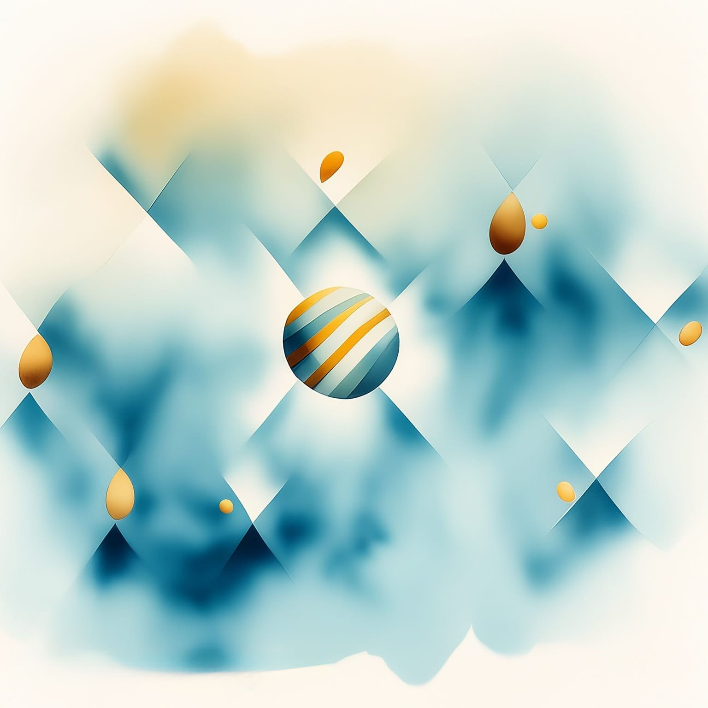
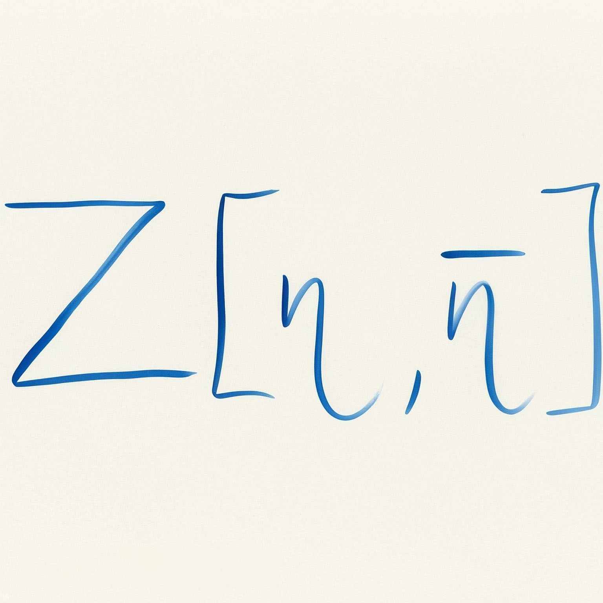
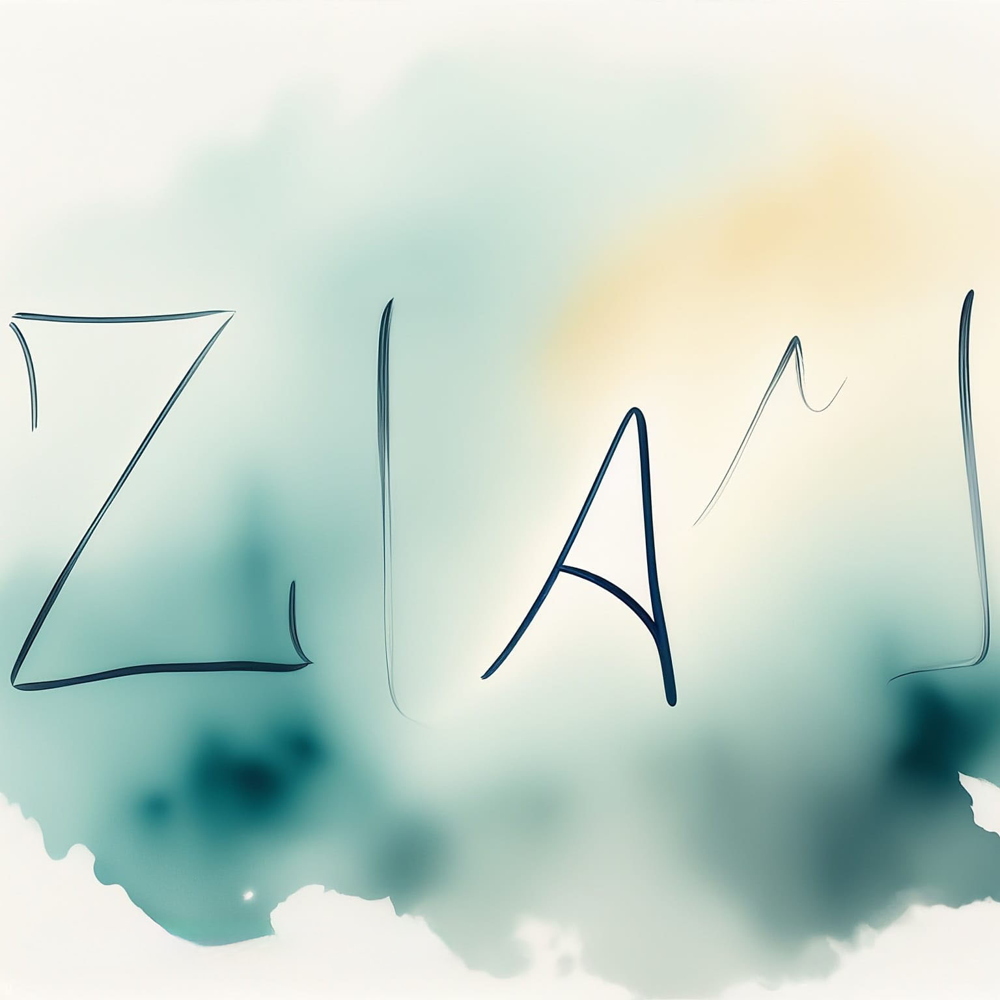
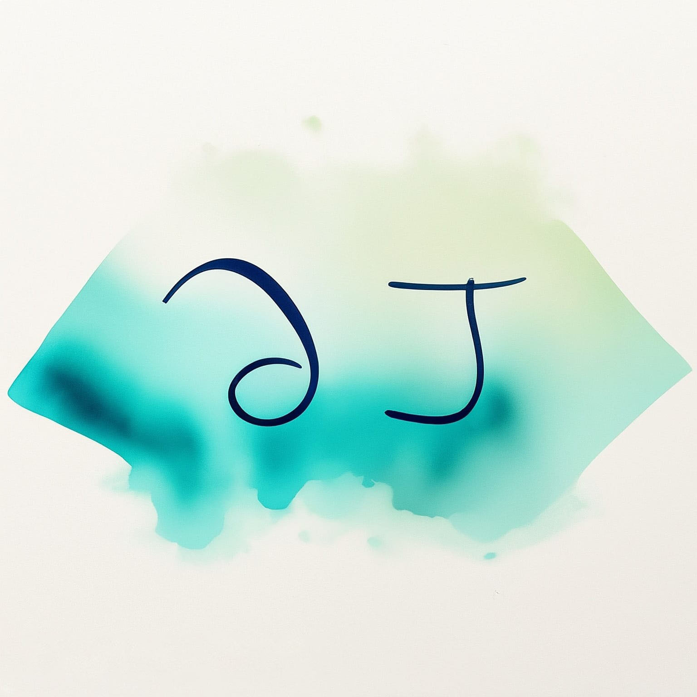
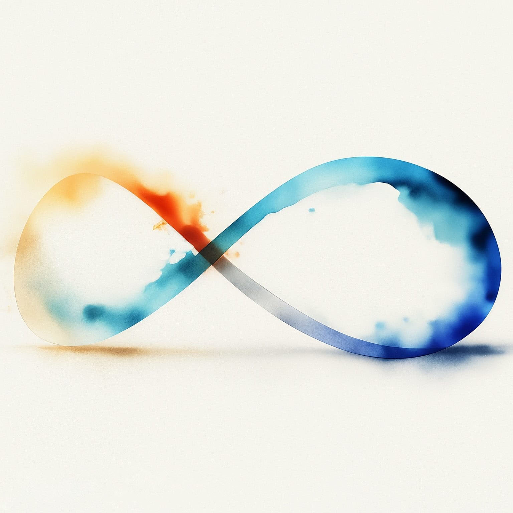
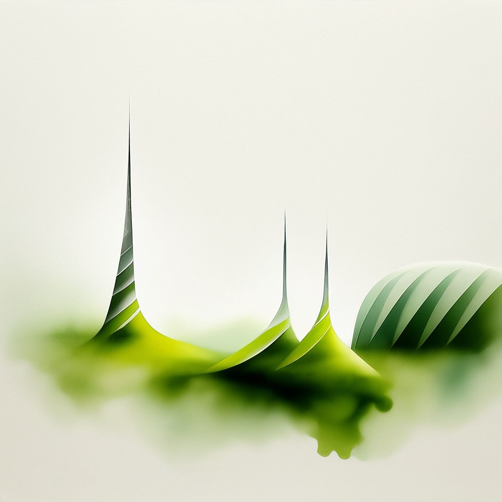
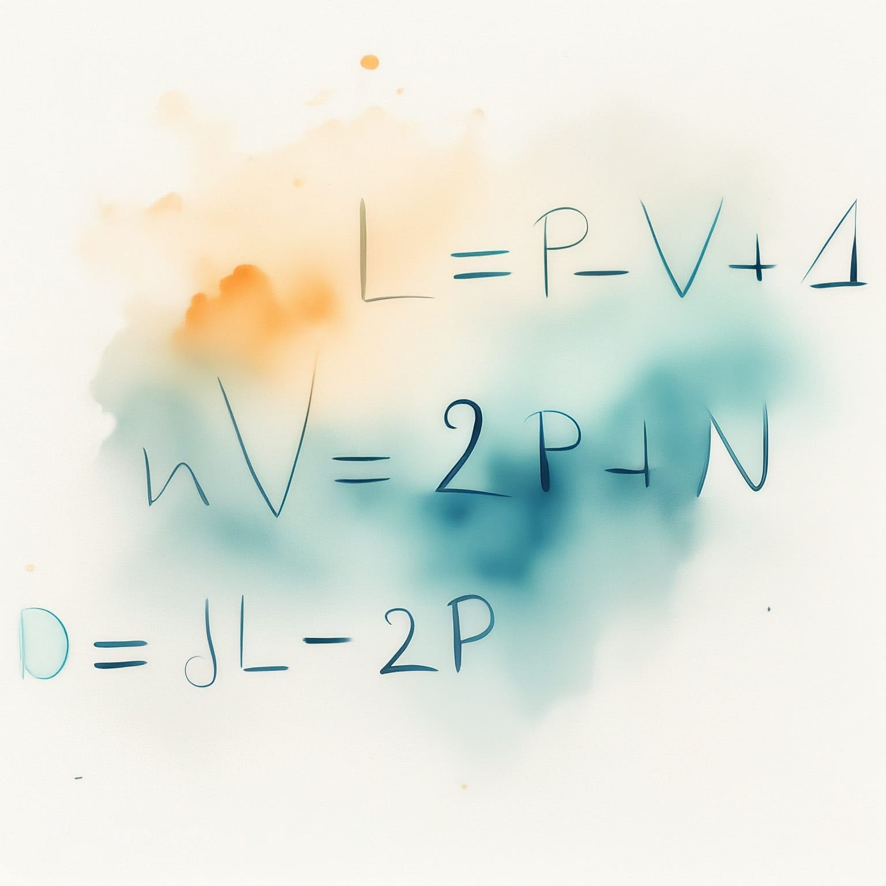
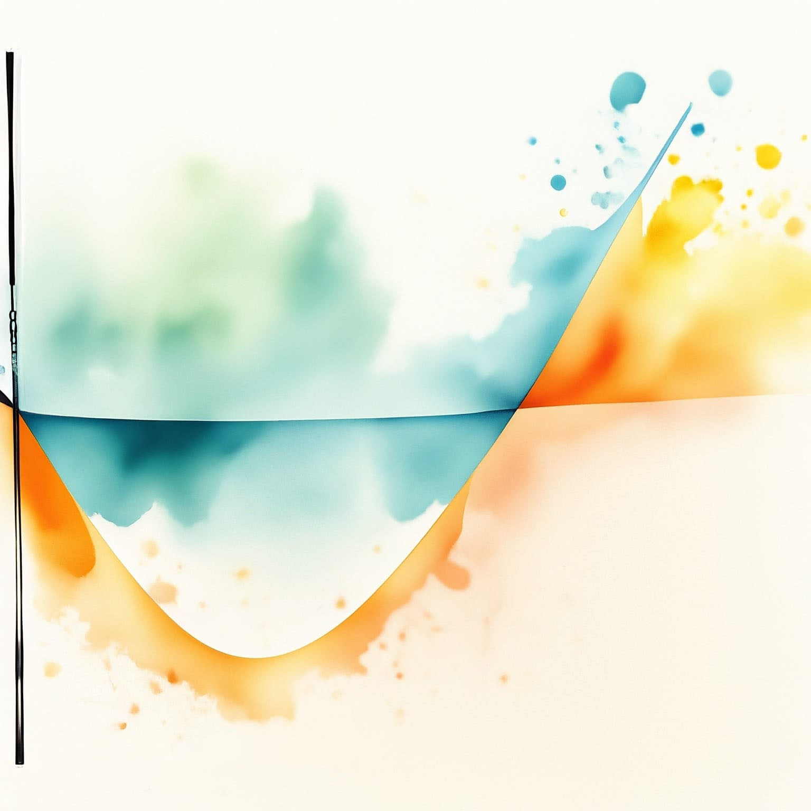
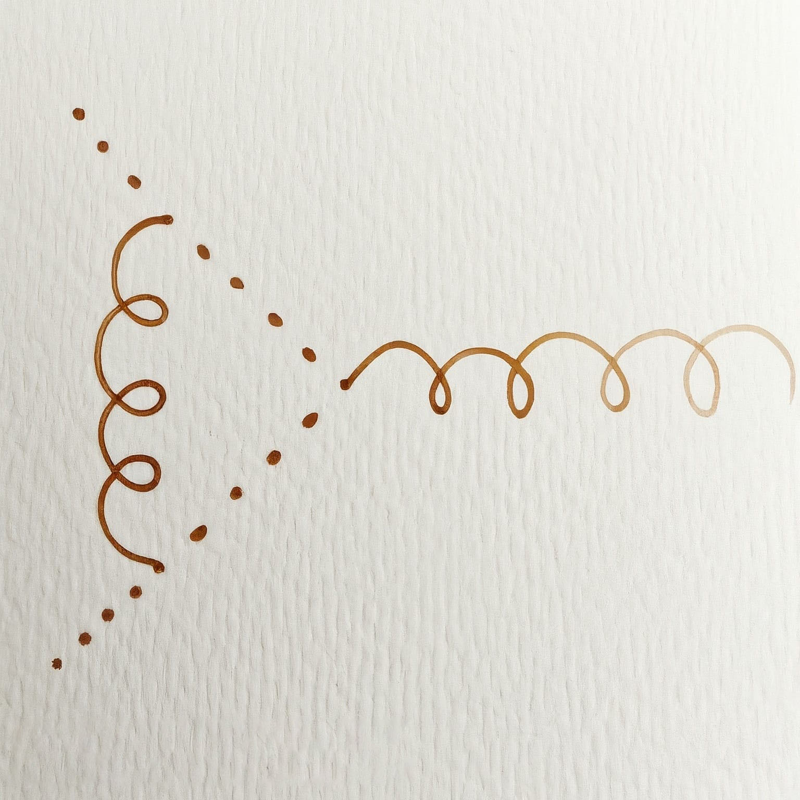

Quantum Field Theory II
Synthèse du cours de PHYS-F440
Enseignant : Riccardo ARGURIO (Année 2023-2024)
Ressources officielles : Page de l’ULB Espace Dochub
Table des matières
Chapitre 1 : Path Integral Formulation of Quantum Mechanics
- 1.1 Recall of Quantum Mechanics
- 1.2 Operators and Representation
- 1.3 Amplitude
- 1.4 Canonical Hamiltonian and Gaussian Integrals
- 1.5 Operators under the Path Integral
- 1.6 Towards Field Theory
Chapitre 2 : Path Integral for a Scalar Field Theory

- 2.1 Formal Definition of QFT
- 2.2 Free Real Scalar Theory
- 2.3 Real Scalar Field with Interactions
Chapitre 3 : Path Integral for a Fermionic Field

- 3.1 Anticommuting Numbers
- 3.2 Dirac Propagator and Generating Functional
- 3.3 Interacting Fermions
Chapitre 4 : Path Integral for a Vector Field

- 4.1 Gauge Freedom
- 4.2 Faddeev-Popov Procedure
- 4.3 Adding Sources
- 4.4 Example: QED
- 4.5 Scalar QED
Chapitre 5 : Symmetries, Ward Identity, and the Path Integral

- 5.1 Noether Theorem
- 5.2 Quantum Conservation Equations
- 5.3 Quantum Equation of Motion
Chapitre 6 : Physics of Renormalization

- 6.1 A First Computation: 2-point Function in \(\lambda \phi^4\)
- 6.2 A Second Computation: Vertex in \(\lambda \phi^4\)
- 6.3 A Third Computation: \(\mathcal{L}_I = g\, \phi \bar{\psi}\psi\)
Chapitre 7 : Radiative Corrections: Loops and Divergences

- 7.1 Field-strength Renormalization
- 7.2 Physical and Bare Quantities
- 7.3 LSZ Reduction Formula
Chapitre 8 : Power Counting, Divergences, and Renormalizability

- 8.1 Example: \(\lambda \phi^4\) Theory
- 8.2 Power Counting
- 8.3 Renormalizability
Chapitre 9 : Counter-terms and Renormalization Condition
- 9.1 Renormalized Perturbation Theory
- 9.2 Renormalization Conditions
- 9.3 Fix \(\delta_\lambda\) through NLO of a 4-points Function
- 9.4 Dimensional Regularization
- 9.5 Field Strength and Mass Renormalization
Chapitre 10 : Renormalization and Gauge Symmetry: QED
- 10.1 Counterterms and Gauge Symmetry
- 10.2 Counterterms and Ward Identity
- 10.3 One-loop Structure of QED
Chapitre 11 : Energy Scale and Evolution of Couplings

- 11.1 Renormalization Scale \(\bar{M}\)
- 11.2 The Callan-Symanzik Equation
- 11.3 Computation of \(\beta\) and \(\gamma\) in \(\lambda \phi^4\)
- 11.4 Generalization to \(\lambda \phi^4\)
- 11.5 An Application to QED
- 11.6 Renormalization Group Flow
Chapitre 12 : Non-Abelian Gauge Theories
- 12.1 Global Symmetry
- 12.2 Local Symmetry
- 12.3 Field Strength Tensor
- 12.4 Yang-Mills Lagrangian
Chapitre 13 : Quantization and Ghosts
- 13.1 Gauge Fixing in QED
- 13.2 Gauge Fixing in QCD
- 13.3 Faddeev-Popov Ghost
- 13.4 Feynman Rules
Chapitre 14 : Renormalization and \(\text{sgn}(\beta)\)

- 14.1 Renormalization
- 14.2 A Long Walk to the \(\beta\)-function
- 14.3 Asymptotic Freedom